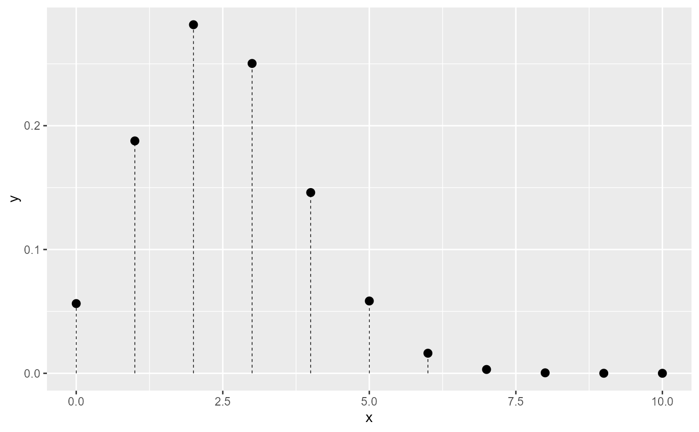
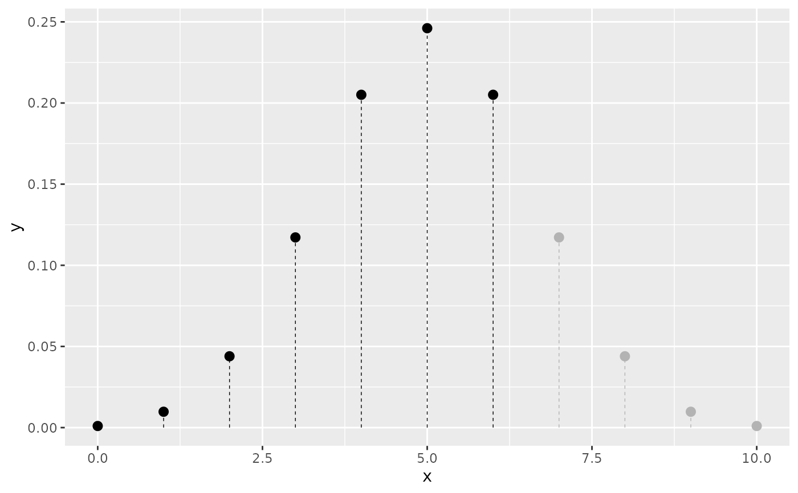
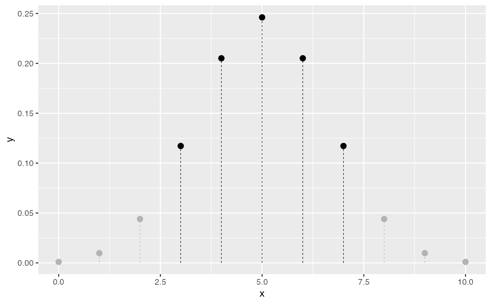

geom_pmf() creates a ggplot2 layer that plots a probability mass function
(PMF) using a lollipop representation. Vertical segments extend from
zero up to the probability value at each integer support value and a point is
drawn at the top. Shading modes mirror those of geom_pdf(): a cumulative
threshold (p), a two-sided interval (p_lower/p_upper), or a highest
density region (shade_hdr). Non-shaded lollipops are rendered in grey with
dashed segments.
Usage
geom_pmf(
mapping = NULL,
data = NULL,
stat = StatPMF,
position = "identity",
...,
na.rm = FALSE,
show.legend = NA,
inherit.aes = TRUE,
fun,
xlim = NULL,
support = NULL,
point_size = 2.5,
stick_linewidth = 0.25,
stick_linetype = "dashed",
color = "black",
args = list(),
p = NULL,
lower.tail = TRUE,
p_lower = NULL,
p_upper = NULL,
shade_outside = FALSE,
shade_hdr = NULL
)
StatPMF
GeomPMFFormat
An object of class StatPMF (inherits from Stat, ggproto, gg) of length 3.
An object of class GeomPMF (inherits from GeomPoint, Geom, ggproto, gg) of length 2.
Arguments
- mapping
Set of aesthetic mappings created by
aes(). If specified andinherit.aes = TRUE(the default), it is combined with the default mapping at the top level of the plot. You must supplymappingif there is no plot mapping.- data
The data to be displayed in this layer. There are three options:
NULL(default): the data is inherited from the plot data as specified in the call toggplot().A
data.frame, or other object, will override the plot data. All objects will be fortified to produce a data frame. Seefortify()for which variables will be created.A
functionwill be called with a single argument, the plot data. The return value must be adata.frame, and will be used as the layer data. Afunctioncan be created from aformula(e.g.~ head(.x, 10)).
- stat
The statistical transformation to use on the data for this layer. When using a
geom_*()function to construct a layer, thestatargument can be used to override the default coupling between geoms and stats. Thestatargument accepts the following:A
Statggproto subclass, for exampleStatCount.A string naming the stat. To give the stat as a string, strip the function name of the
stat_prefix. For example, to usestat_count(), give the stat as"count".For more information and other ways to specify the stat, see the layer stat documentation.
- position
A position adjustment to use on the data for this layer. This can be used in various ways, including to prevent overplotting and improving the display. The
positionargument accepts the following:The result of calling a position function, such as
position_jitter(). This method allows for passing extra arguments to the position.A string naming the position adjustment. To give the position as a string, strip the function name of the
position_prefix. For example, to useposition_jitter(), give the position as"jitter".For more information and other ways to specify the position, see the layer position documentation.
- ...
Other parameters passed on to
ggplot2::layer().- na.rm
If
FALSE, the default, missing values are removed with a warning. IfTRUE, missing values are silently removed.- show.legend
Logical. Should this layer be included in the legends?
NA, the default, includes if any aesthetics are mapped.FALSEnever includes, andTRUEalways includes. It can also be a named logical vector to finely select the aesthetics to display. To include legend keys for all levels, even when no data exists, useTRUE. IfNA, all levels are shown in legend, but unobserved levels are omitted.- inherit.aes
If
FALSE, overrides the default aesthetics, rather than combining with them. This is most useful for helper functions that define both data and aesthetics and shouldn't inherit behaviour from the default plot specification, e.g.annotation_borders().- fun
A function to compute the PMF (e.g. dbinom or dpois). The function must accept a numeric vector as its first argument and return non-negative probability values. (Ideally, the probabilities sum to 1 over the support.)
- xlim
A numeric vector of length 2 specifying the range (of x values) over which to evaluate the PMF. If not provided, a default range of 0 to 10 is used.
- support
An optional integer or numeric vector giving the exact support points to evaluate. When supplied,
xlimis ignored.- point_size
Size of the points at the top of each lollipop (defaults to 2.5).
- stick_linewidth
Linewidth of the vertical sticks (defaults to 0.25).
- stick_linetype
Linetype of the vertical sticks (defaults to
"dashed").- color
Color for the shaded points and segments (defaults to
"black").- args
A named list of additional arguments to pass to
fun.- p
(Optional) A numeric value between 0 and 1 specifying a cumulative probability threshold. When
lower.tail = TRUE(the default), lollipops up to the corresponding quantile are shaded; whenFALSE, the upper tail is shaded.- lower.tail
Logical; controls the direction of
p-based shading. Defaults toTRUE.- p_lower
(Optional) Lower cumulative probability bound for two-sided shading. Used with
p_upper.- p_upper
(Optional) Upper cumulative probability bound for two-sided shading. Used with
p_lower.- shade_outside
Logical; if
TRUE, shading is applied to the tails outside thep_lower/p_upperinterval rather than inside. Defaults toFALSE.- shade_hdr
(Optional) A numeric value between 0 and 1 specifying the target coverage of the highest density region (HDR) to shade – the smallest set of support points containing at least the specified probability mass. Because a discrete distribution may not achieve the exact coverage, the smallest HDR with coverage >=
shade_hdris used and a message is issued viacli::cli_inform()reporting both the specified and actual coverage whenever they differ.
Examples
# Basic PMF
ggplot() +
geom_pmf(fun = dbinom, xlim = c(0, 10), args = list(size = 10, prob = 0.25))

# Shade the lower tail up to the 80th percentile
ggplot() +
geom_pmf(fun = dbinom, xlim = c(0, 10), args = list(size = 10, prob = 0.5),
p = 0.8)

# Shade the 80% HDR
ggplot() +
geom_pmf(fun = dbinom, xlim = c(0, 10), args = list(size = 10, prob = 0.5),
shade_hdr = 0.8)
#> ! shade_hdr: 80% is not exactly achievable for this discrete distribution.
#> ℹ Using smallest HDR with coverage >= 80%: actual coverage = 89.1%.
